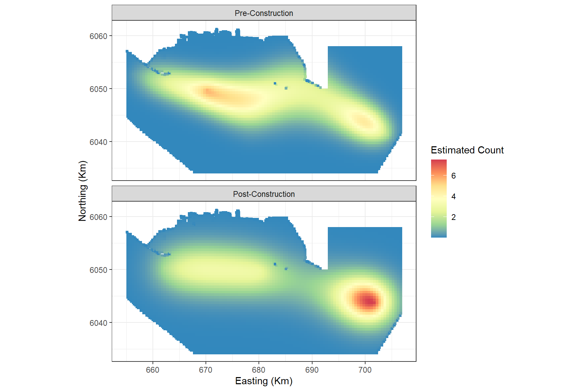
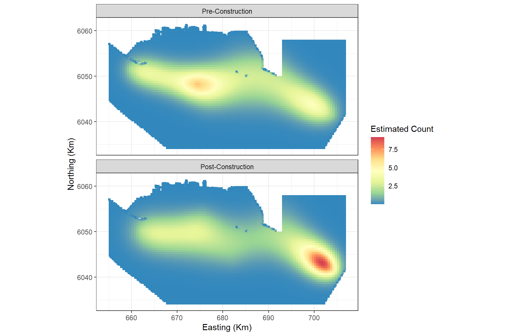

MRSea: 2D Interaction Example
LAS Scott-Hayward, CG Walker and ML Mackenzie
2024-05-08
Source:vignettes/web/Interactions_salsa2d_MRSea.Rmd
Interactions_salsa2d_MRSea.RmdThis vignette shows an analysis which allows different knot locations for different levels of a spatial interaction term. This may be particularly useful where the spatial coverage of the two levels is not the same.
Load data
- Load the distance sampling corrected Nysted data from the package.
data("nysted.analysisdata")
mydata<-nysted.analysisdata # renamed just to be less typing!- Fit an initial Model to the data. Here we include only the
impactvariable as a factor along with the offset of cell area.
mydata$blockid <- paste(mydata$transect.id, mydata$season, mydata$impact,sep = "")Make distance matrices
- Create a grid of knots that will be used as possible knot locations.
Create one grid for before and one for after. As we have complete
spatial overlap between the two
impactlevels, I have chosen the same number of candidate knot locations for each.
myknots <- selectFctrKnots(mydata[, c("x.pos", "y.pos", "impact")],
nk=150,
s.eed=543)
head(myknots)
#> x.pos y.pos impact
#> 1 659.75 6042.25 0
#> 2 706.25 6049.75 0
#> 3 688.25 6037.75 0
#> 4 693.75 6050.25 0
#> 5 658.25 6044.25 0
#> 6 678.25 6052.25 0
require(ggplot2)
ggplot() +
geom_point(data=mydata, aes(x.pos, y.pos)) +
geom_point(data=myknots, aes(x.pos, y.pos), colour='red') +
facet_wrap(~impact, nrow=2) +
theme_bw() + xlab('Easting (Km)') + ylab('Northing (Km)') +
coord_equal()Figure showing the candidate knot locations for each of the interaction levels
The myknots object has three columns (x, y and impact)
but it is also useful to have an object with just the coordinates.
kg<-myknots[,1:2]- Create distances between knots and data. At some future point, this ability will be a function in the package.
Analysis
- Run SALSA2D to find the appropriate number and location of knots for
the 2D smooth term of
x.posandy.pos. For speed of fitting, I am specifying a small number of knots and a quick fitness measure, QAIC. Remember that as we are using the distance matrix to act as the interaction, we do not specify the interaction in thesalsa2dlistobject but we do includeimpactas a main effect in the initial model. Additionally, the knotgrid specified insalsa2dlistmust have three columns (x, y, interaction level).
initialModel <- glm(response ~ as.factor(season) + as.factor(impact)
+ offset(log(area)), family = "quasipoisson",
data = mydata)Note that by setting startKnots = 10, 10 knots will be space-filled across the combined grids which may lead to unequal starting positions biased towards one factor level. To avoid this, you can manually specify starting locations. This is described at the end of the document.
# make parameter set for running salsa2d
salsa2dlist<-list(fitnessMeasure = "QAIC",
knotgrid = myknots,
startKnots=10,
minKnots=4,
maxKnots=12)
salsa2dOutput<-runSALSA2D(model = initialModel,
salsa2dlist = salsa2dlist,
d2k=d2k,k2k=k2k,
suppress.printout = TRUE)- Assess the output for the location of the selected knots.
mymodel<-salsa2dOutput$bestModel
chosenknots <- myknots[mymodel$splineParams[[1]]$knotPos,]
count(chosenknots, impact)
#> impact n
#> 1 0 7
#> 2 1 3
#startingknots <- myknots[startknotlocs,]
imp.labs <- c("Pre-Construction", "Post-Construction")
names(imp.labs) <- c("0", "1")
# quick look to see what was chosen
ggplot(myknots) +
geom_point(aes(x=x.pos, y=y.pos)) +
geom_point(aes(x=x.pos, y=y.pos, size=2), data=chosenknots, alpha=4/5,
show.legend = FALSE, shape=5) +
theme_bw() + xlab('Easting (Km)') + ylab('Northing (Km)') +
coord_equal() +
facet_wrap(~impact, ncol=1, labeller = labeller(impact=imp.labs))- You can find the knot locations chosen by querying model object.
mymodel$splineParams[[1]]$knotPos
#> [1] 157 162 131 117 159 47 23 24 109 13
cv.gamMRSea(mydata, mymodel, K=10, s.eed = 1)$delta[1]
#> [1] 5.942072Making predictions
- To make predictions to a grid, we also need to create a prediction distance matrix and we do this in the same way as for the data above.
data("nysted.predictdata")
datacoords<-nysted.predictdata[,c('x.pos', 'y.pos', 'impact')]
dists<-makeDists(datacoords = datacoords,
knotcoords = myknots,
knotmat = FALSE)
g2k = dists$dataDist
# make predictions on response scale
nysted.predictdata$preds<-predict.gamMRSea(newdata = nysted.predictdata,
g2k =g2k,
object = mymodel)Plotting the predictions pre and post impact:
ggplot() +
geom_tile(aes(x=x.pos, y=y.pos, fill=preds), height=0.5, width=0.5,
data=filter(nysted.predictdata, season==1)) +
coord_equal()+
scale_fill_distiller(palette = "Spectral",name="Estimated Count") +
theme_bw() +
xlab('Easting (Km)') + ylab('Northing (Km)') +
facet_wrap(~impact, ncol=1, labeller = labeller(impact = imp.labs))
and, since this is simulated data, we can also look at the truth:
ggplot() +
geom_tile(aes(x=x.pos, y=y.pos, fill=truth.re), height=0.5, width=0.5,
data=filter(nysted.predictdata, season==1)) +
coord_equal()+
scale_fill_distiller(palette = "Spectral",name="Estimated Count") +
theme_bw() +
xlab('Easting (Km)') + ylab('Northing (Km)') +
facet_wrap(~impact, ncol=1, labeller = labeller(impact = imp.labs))Choosing your own starting knot locations
In the above analysis, the SALSA algorithm will space-fill across all knot locations to initialise the first set of knots. This could mean that in the initial step, one of the levels gets very few starting locations. If you wish to have a more even set of starting locations, you can specify these locations. Here I am specifying 5 locations from each level of the interaction.
startknotlocs <- selectFctrStartk(myknots, 5, s.eed = 1)
#> [1] "Greater than 1 optimal design; keeping first one......"
#> [1] "Greater than 1 optimal design; keeping first one......"The set up of the model is a little different and I have included
## below to indicate which lines have been
changed/added.
salsa2dlist <- list(fitnessMeasure = 'QAIC',
knotgrid = myknots,
startKnots = length(startknotlocs), ##
minKnots = 4,
maxKnots = 12,
gap = 0)
salsa2doutput_stkn<-runSALSA2D(model = initialModel,
salsa2dlist = salsa2dlist,
d2k= d2k, k2k = k2k,
initialise=FALSE, ##
initialKnPos = startknotlocs, ##
suppress.printout = TRUE)As before, we can look to see where the model has placed the knots. The starting locations are a grey box with a cross and the final locations are red diamonds
mymodel_sk<-salsa2doutput_stkn$bestModel
chosenknots_sk <- myknots[mymodel_sk$splineParams[[1]]$knotPos,]
startingknots <- myknots[startknotlocs,]
count(chosenknots_sk, impact)
#> impact n
#> 1 0 7
#> 2 1 5
# quick look to see what was chosen
ggplot(myknots) +
geom_point(aes(x=x.pos, y=y.pos)) +
geom_point(aes(x=x.pos, y=y.pos, size=2),data=chosenknots_sk, alpha=4/5,
show.legend = FALSE, shape=5, colour = 'firebrick') +
geom_point(aes(x=x.pos, y=y.pos, size=2), shape = 7, data=startingknots,
colour = 'darkgrey', show.legend = FALSE) +
theme_bw() + xlab('Easting (Km)') + ylab('Northing (Km)') +
coord_equal() +
facet_wrap(~impact, ncol=1, labeller = labeller(impact=imp.labs))Black dots are candidate knot locations, grey squares with crosses are initial knot locations and red diamonds are final knot locations.
cv.gamMRSea(mydata, mymodel_sk, K=10, s.eed=1)$delta[1]
#> [1] 5.940744This model is better than the earlier one which used a space-filled selection of all knots for starting locations. However, bear in mind that both models are using a simplistic number of start knots and could be improved.
# make predictions on response scale
nysted.predictdata$preds_sk<-predict.gamMRSea(newdata = nysted.predictdata,
g2k =g2k,
object = mymodel_sk)Plotting the predictions pre and post impact:
ggplot() +
geom_tile(aes(x=x.pos, y=y.pos, fill=preds_sk), height=0.5, width=0.5,
data=filter(nysted.predictdata, season==1)) +
coord_equal()+
scale_fill_distiller(palette = "Spectral",name="Estimated Count") +
theme_bw() +
xlab('Easting (Km)') + ylab('Northing (Km)') +
facet_wrap(~impact, ncol=1, labeller = labeller(impact = imp.labs))